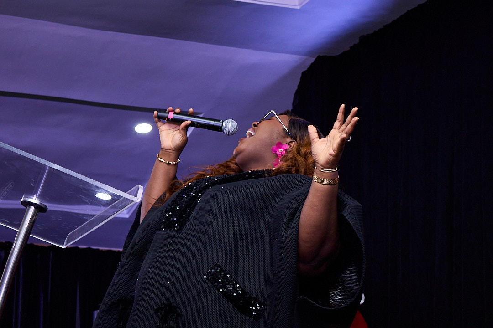
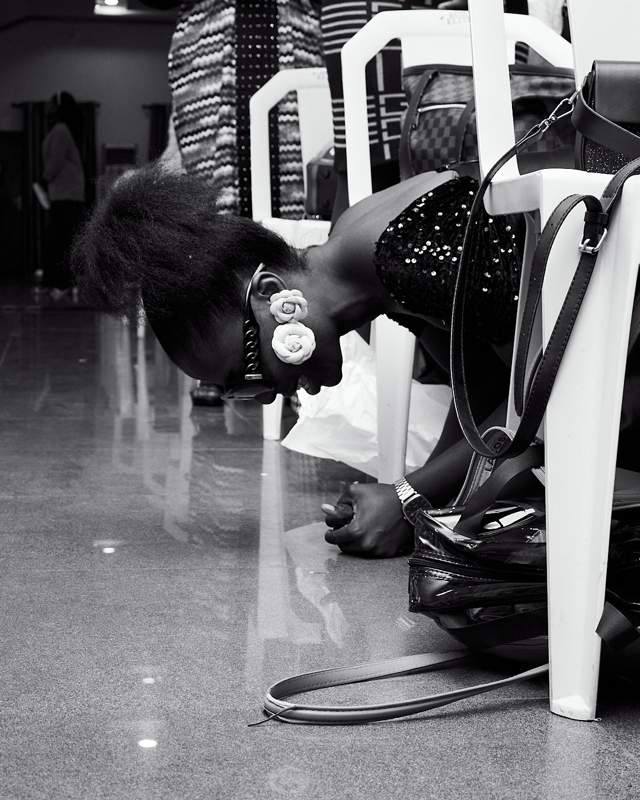
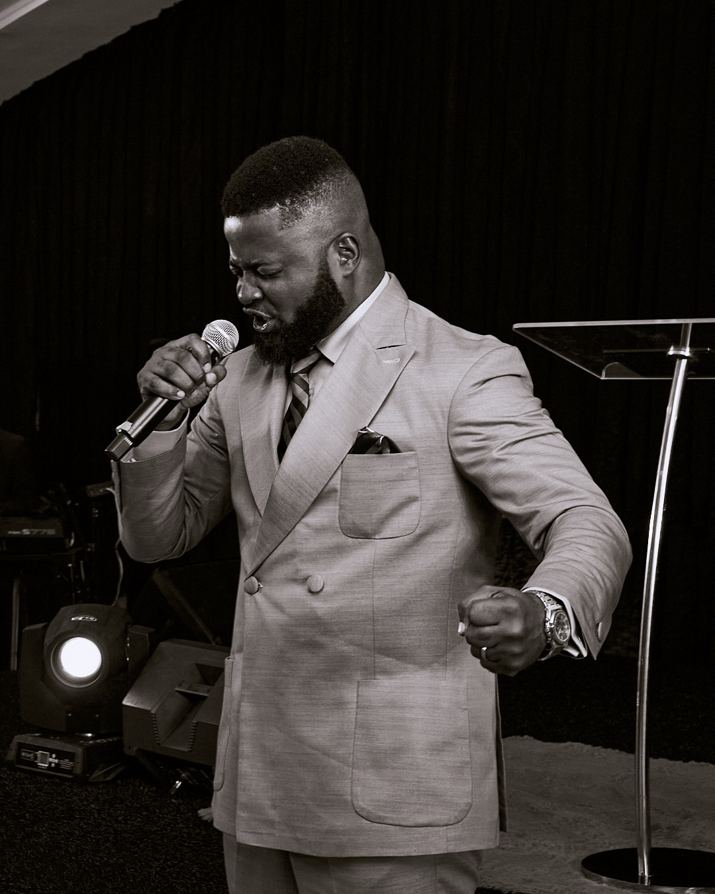
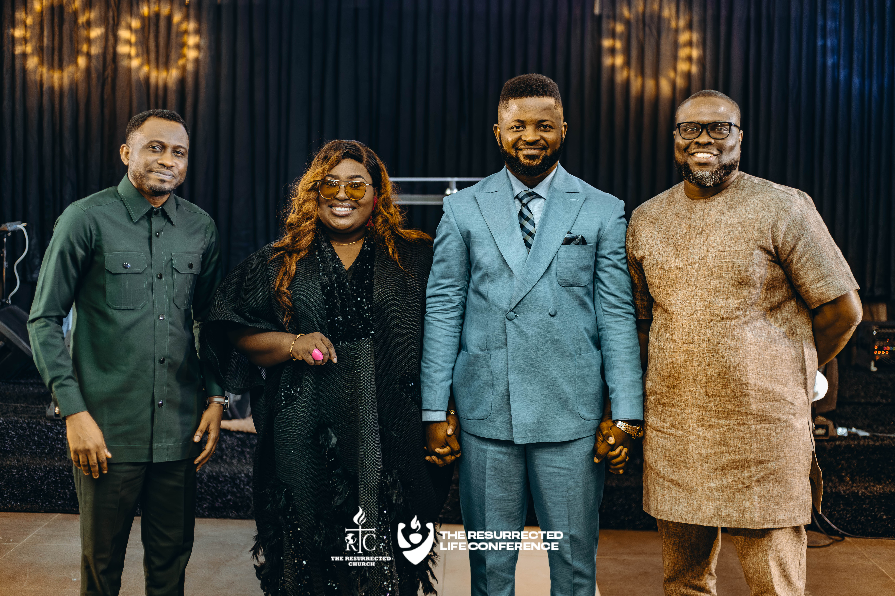

Encounter over Entertainment
A gathering intentionally built around genuine encounters with God.

TRLC 2026 is two days set apart for The Resurrected Church to encounter the supernatural power of God, signs, wonders, and a manifest presence that changes what you believe is possible. This is not just a program to attend. It's an encounter to carry forward.
The Resurrected Life Conference (TRLC) is a Word-based conference committed to raising believers who understand and live in the reality of their life in Christ. Through sound biblical teaching, worship, prayer, and the ministry of the Holy Spirit, participants are equipped to grow in spiritual maturity, walk in their God-given identity, and express the life of Christ with confidence.
More than an annual gathering, TRLC is a platform for empowering believers to move beyond mere religious activity into a practical, victorious, and supernatural Christian life rooted in the truth of God's Word.
A gathering intentionally built around genuine encounters with God.
Biblical truths explained with clarity and applied to everyday Christian living.
A growing family committed to carrying the same vision long after the conference concludes.


Two days of biblical teaching and powerful ministry designed to awaken you to the supernatural life that is already yours in Christ.
Extended, unhurried worship sessions designed to make room for God to move in signs, wonders and His manifest presence.
Sessions on identity, healing, purpose and mission taught in practical language you can apply immediately.
Authentic community to help every attendee walk out what God begins.
TRLC carries momentum into 2026. Here's a glimpse into The Divine Life, our 2025 gathering.








Catch moments from TRLC 2025 and prepare your heart for what God will do in 2026.
Every gift toward TRLC 2026 helps make this year's conference possible, but it also goes beyond a two-day event. It helps us invest in sound, media, and venue infrastructure that will serve not only TRLC, but the ongoing work of The Resurrected Church for years to come. Your generosity isn't just covering expenses; it's helping us build the capacity to teach, disciple, and reach more lives with the message of Christ.
Registration, hospitality, volunteer support, security and every detail that allows people to arrive ready to encounter God.
Cameras, production and livestream systems that take the message beyond the venue to thousands watching around the world.
Professional audio and visual systems that remove distractions and create an environment where ministry can flourish.
Infrastructure that serves not only TRLC 2026 but every future edition of the conference.
Your gift invests in lives that will be raised, restored and sent through TRLC 2026. Whether you're an individual, a church, or an organisation, there's a place for you in this vision.